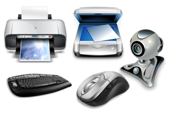
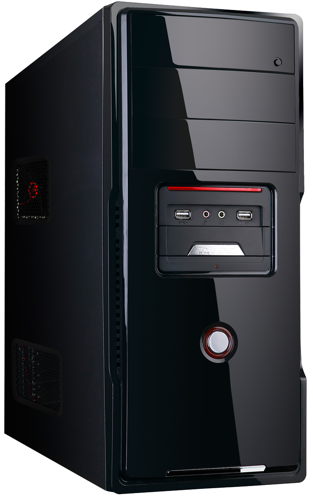

Champlain Computing, A First-Year's Guide
Welcome soon to be Champlain College student
Essentials At the forefront of computer in both school and a professional environment is almost always a solid word processor. The current favorite is the age-old Microsoft Word within Microsoft Office. Now your school may offer it for free, or you may be planning on purchasing it. Do Not Purchase Microsoft Office.
Google Drive has all of the functionality and far more than Microsoft’s counterpart. You may be used to Word, and not want to learn something new. This is absolutely not something to worry about! Google Drive handles exactly like Word in it’s basic functionality while adding so much more capability. And yes, you can download your Google docs as Word files if your professor requires it, or a group member still uses microsoft.
Google Drive features a fully cloud system, so you never have to worry about tripping the power cable before saving. Additionally, several people can all simultaneously work on the same document. Google also offers full Addon support. Some of my favorites include a built in thesaurus, bibliography machine, and change tracker for when I am working with groups. These are extremely easy to install and manage.
On Top of all of these features, Google Drive includes equivalents to excel, powerpoint and all of the other Office programs. And all of this is for free!
Stepping back from this whole Google vs Microsoft war (massacre) I’ve started, there are a couple of other programs you should probably have ready to go:
7zip - An easy compression/decompression manager for large/many files
Virus Protection - See Security page
Google Chrome - The best browser (Firefox if you have RAM problems)
UTorrent - ;)
Netflix - Don’t lie to yourself